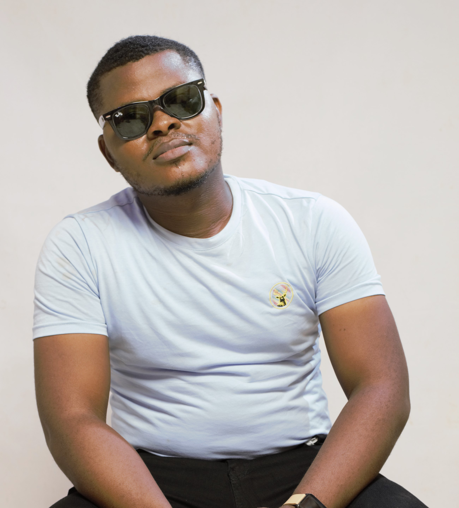

Samuel Ojo | wdd130
Hello! My name is Samuel Ojo, I am a video editor from Lagos, Nigeria. I love reading, writing and watching movies. I consider myself a tech inclined individual, though I have spent the last decade working in the creative and entertainent industry. I believe I have what it takes to excel in this class, and other BYU courses.